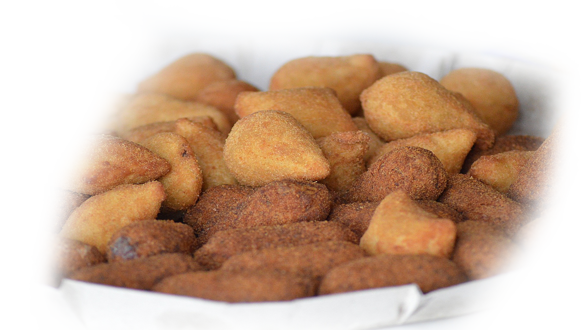
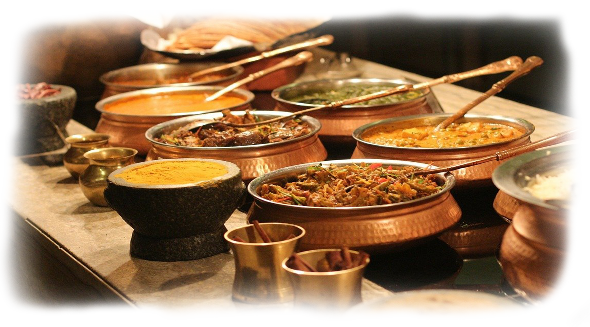

Os melhores salgados da região de São José dos Campos, tudo feito com o maior amor e dedicação que só uma mineira raizes sabe fazes, você pode já ter comido quase tudo que o nosso Brasil tem a oferecer mais nas mãos desse Tia, você ira sentir outros sabores.

Comidas e salgados para festas e eventos de todas as ocasiões, dês de um aniversário da sua pequena criança ou seu amor até um jantar para os funcionários da sua empresa ou quem sabe um belo café da manhã. Formal ou descontraído, estaremos sempre enchendo seus pratos.
